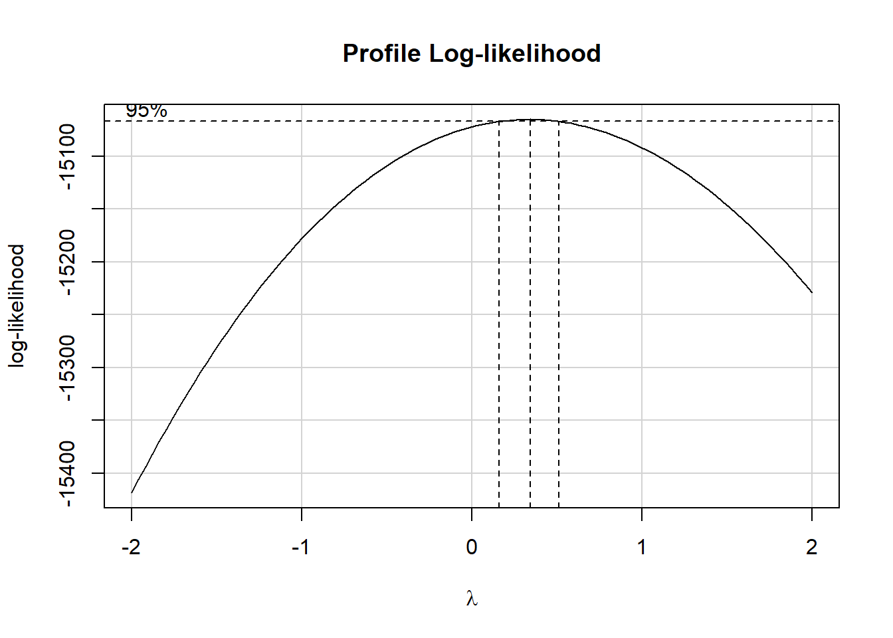
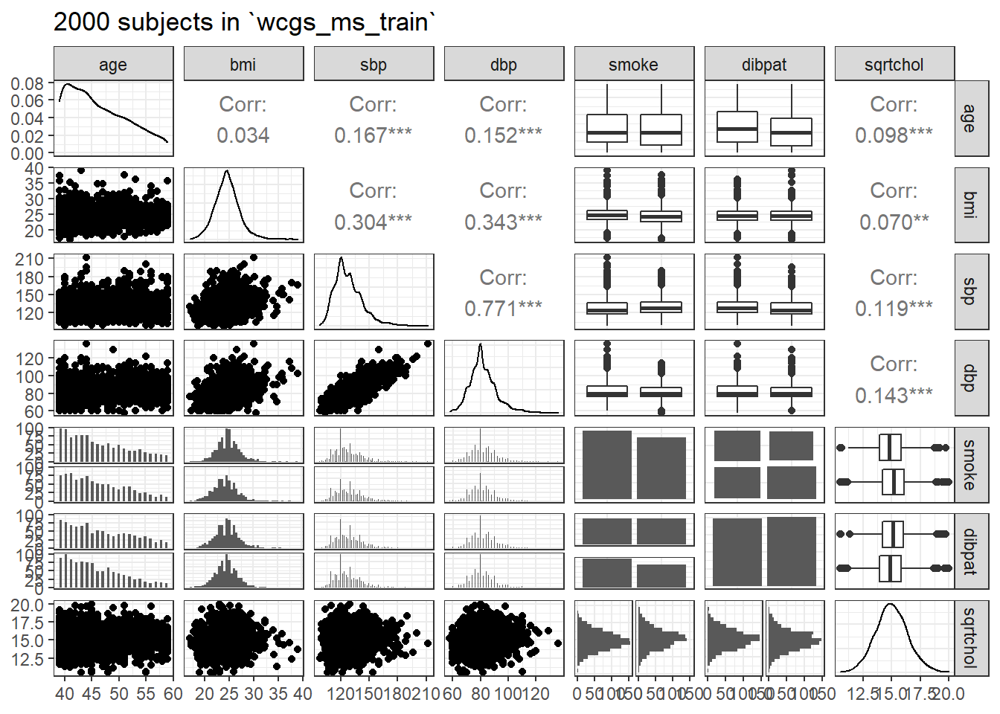
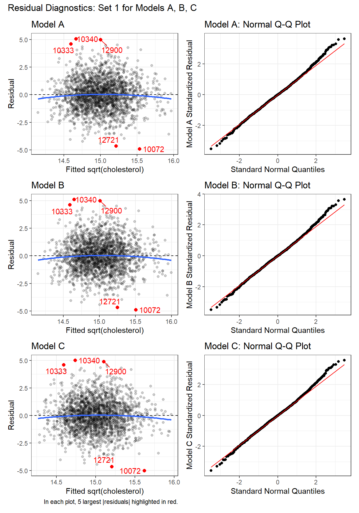
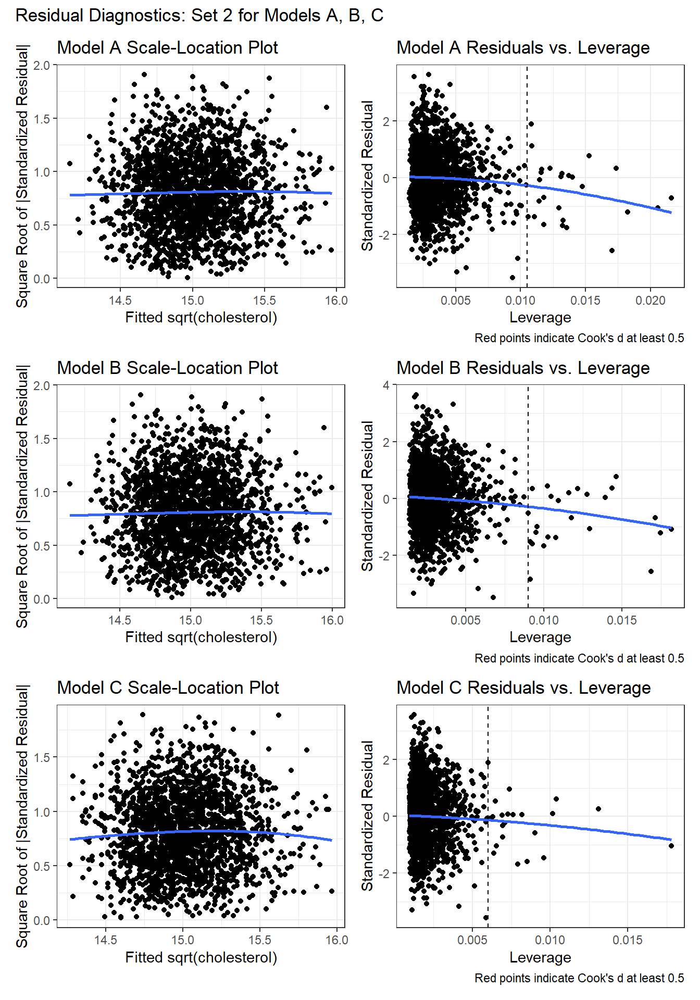

knitr::opts_chunk$set(comment = NA)
library(broom)
library(car)
library(GGally)
library(ggrepel)
library(janitor)
library(kableExtra)
library(patchwork)
library(tidyverse)
theme_set(theme_bw())31 Building Prediction Models for wcgs
Sometimes, we use a regression model for description of a multivariate relationship which requires only that we provide an adequate fit to the data at hand. Should we want to use the model for prediction, then a more appropriate standard which requires us to fit a model that does each of the following three things:
- [fits well] Provides an adequate fit to the data at hand
- [parsimonious] Includes only those predictors which actually have detectable predictive value
- [predicts well out of sample] Does a better job predicting our outcome in new data than other alternative models
For now, we’ll focus on a pair of issues:
- Given a set of predictors, how should we let the computer help us understand which subsets of those predictors are most worthy of our additional attention?
- Given a pair of models to compare, what tools should we use to determine which one better predicts new data?
31.1 Setup: Packages Used Here
We’ll also use some functions from the Hmisc and rms packages.
31.2 Predicting Cholesterol Level in WCGS, Again
To address these issues, I’ll again look at the wcgs data (Western Collaborative Group Study), described in Chapter 17, then again in Chapter 30.
wcgs <- read_csv("data/wcgs.csv", show_col_types = FALSE)This time, we’ll try to predict the variable chol on the basis of some subset of the following six predictors: age, bmi, sbp, dbp, smoke and dibpat.
The steps we’ll take are as follows.
- Check the
wcgsdata for missing or out-of-range values in the variables under study, so we don’t regret it later. Make a decision about how to handle issues here. - Partition the
wcgsdata into a training (development) sample of 2000 observations, and a test (holdout) sample of the remaining observations. - Using only the model development sample, fit three candidate models.
- Model A will predict
cholusing all six predictors. - Model B will predict
cholusing five predictors, specificallyage,bmi,dbp,dibpatandsmoke. - Model C will predict
cholusing only three predictors, specificallyage,dbpandsmoke
- Model A will predict
- Compare the fit quality of these models in the development sample to see if any of them is superior in terms of in-sample predictive quality.
- Assess regression assumptions in each of these models in the development sample.
- Finally moving to the holdout sample, compare the quality of predictions made by the models in terms of several criteria to see if any of the models (A, B or C) is clearly superior in terms of out-of-sample prediction.
31.3 Checking for Missing or Problematic Values
Suppose that after consulting with clinical experts, we want to ensure that:
- all
agevalues are between 39 and 59 years - all
bmiare between 15 and 50 - all
sbpare between 80 and 250 mm Hg - all
dbpare between 50 and 200 mm Hg - all values of
sbp-dbpare at least 10 and no more than 90 mm Hg - all values of
cholare between 100 and 400 mg/dl
Hmisc::describe(wcgs |> select(age, bmi, sbp, dbp, smoke, dibpat, chol))select(wcgs, age, bmi, sbp, dbp, smoke, dibpat, chol)
7 Variables 3154 Observations
--------------------------------------------------------------------------------
age
n missing distinct Info Mean Gmd .05 .10
3154 0 21 0.996 46.28 6.256 39 40
.25 .50 .75 .90 .95
42 45 50 55 57
lowest : 39 40 41 42 43, highest: 55 56 57 58 59
--------------------------------------------------------------------------------
bmi
n missing distinct Info Mean Gmd .05 .10
3154 0 679 1 24.52 2.803 20.59 21.52
.25 .50 .75 .90 .95
22.96 24.39 25.84 27.45 28.73
lowest : 11.19061 15.66050 16.87200 17.21633 17.22242
highest: 36.04248 37.22973 37.24805 37.65281 38.94737
--------------------------------------------------------------------------------
sbp
n missing distinct Info Mean Gmd .05 .10
3154 0 62 0.996 128.6 16.25 110 112
.25 .50 .75 .90 .95
120 126 136 148 156
lowest : 98 100 102 104 106, highest: 200 208 210 212 230
--------------------------------------------------------------------------------
dbp
n missing distinct Info Mean Gmd .05 .10
3154 0 42 0.992 82.02 10.51 68 70
.25 .50 .75 .90 .95
76 80 86 94 100
lowest : 58 60 62 64 66, highest: 125 129 130 136 150
--------------------------------------------------------------------------------
smoke
n missing distinct
3154 0 2
Value No Yes
Frequency 1652 1502
Proportion 0.524 0.476
--------------------------------------------------------------------------------
dibpat
n missing distinct
3154 0 2
Value Type A Type B
Frequency 1589 1565
Proportion 0.504 0.496
--------------------------------------------------------------------------------
chol
n missing distinct Info Mean Gmd .05 .10
3142 12 237 1 226.4 47.99 161.1 175.0
.25 .50 .75 .90 .95
197.2 223.0 253.0 280.0 302.0
lowest : 103 110 111 112 113, highest: 386 390 400 414 645
--------------------------------------------------------------------------------Here are the issues I see:
- The (
chol) total cholesterol levels include 12 missing values (so we need to decide what to do about them) and values of 414 and 645 that I don’t think are plausible. Sincecholis our outcome, I’m inclined to delete those 14 subjects from our analyses. - The
bmivalue of 11.9 is much smaller than all other values, and seems implausible, so I’m inclined to delete that subject, as well. - All of the
agevalues are between 39 and 59, as they should be. - The
dibpatandsmokebinary variables each appear to be reasonable given the timing of the data collection (the early 1960s). - The blood pressures, individually, for
sbpanddbpappear reasonable in terms of their ranges and have no missing data. It’s worth it to check to see that everyone has asbpmeaningfully larger than theirdbp.
wcgs |> mutate(bp_diff = sbp - dbp) |>
select(id, sbp, dbp, bp_diff) |>
slice_min(bp_diff, n = 3)# A tibble: 3 × 4
id sbp dbp bp_diff
<dbl> <dbl> <dbl> <dbl>
1 3822 120 100 20
2 11406 104 80 24
3 10204 110 86 24This looks fine. Are any combinations out of line in the other direction, with a difference of 90 or more?
wcgs |> mutate(bp_diff = sbp - dbp) |>
select(id, sbp, dbp, bp_diff) |>
filter(bp_diff >= 90)# A tibble: 8 × 4
id sbp dbp bp_diff
<dbl> <dbl> <dbl> <dbl>
1 2172 208 102 106
2 12453 196 86 110
3 12280 190 98 92
4 13268 170 80 90
5 3546 188 90 98
6 2078 188 86 102
7 19078 230 118 112
8 22025 210 108 102This sbp - dbp value is called the pulse pressure. Given that these men did not (at enrollment) have heart disease, it is surprising to see so many values separated by more than what would be typical (about 40-60 mm Hg.)
I’ll be a little aggressive in my cleaning and also drop these 8 subjects with sbp - dbp of 90 or more mm Hg. So, we need to deal with the missingness in chol, the strange bmi value and the strange chol value in addition to dropping subjects with sbp - dbp to get to a “clean” data set here.
wcgs_ms <- wcgs |>
select(id, age, bmi, sbp, dbp, smoke, dibpat, chol) |>
filter(complete.cases(id, age, bmi, sbp,
dbp, smoke, dibpat, chol)) |> # drops 12 subjects
filter(bmi > 15) |> # drops 1 subject
filter(sbp - dbp < 90) |> # drops 7 more subjects
filter(chol <= 400) # drops 2 more subjects
nrow(wcgs); nrow(wcgs_ms)[1] 3154[1] 3132So we have dropped a total of 22 subjects from the data set. We could certainly consider imputing missing values of chol, but I am uncomfortable doing that for an outcome.
31.4 Partitioning the wcgs_ms sample
- Partition the
wcgs_mstibble into a training (development) sample of 2000 observations, and a test (holdout) sample of the remaining observations.
Before we partition, it’s always a good idea to ensure that each of the subject identifiers (here, id) are unique.
We could simply count the number of rows in the data set and make sure it matches the number of distinct id values.
c(nrow(wcgs_ms), n_distinct(wcgs_ms |> select(id)))[1] 3132 3132Looks good. If you prefer, check directly with the identical() function, which should return TRUE.
identical(nrow(wcgs_ms), n_distinct(wcgs_ms |> select(id)))[1] TRUERemember to set a seed so that you can replicate the selection.
set.seed(431)
wcgs_ms_train <- slice_sample(wcgs_ms, n = 2000)
wcgs_ms_test <- anti_join(wcgs_ms, wcgs_ms_train, by = "id")
c(nrow(wcgs_ms), nrow(wcgs_ms_train), nrow(wcgs_ms_test))[1] 3132 2000 1132OK. This looks good. We have 2000 observations in the training sample, and the rest in the test sample.
Given a large sample size (at least 500 observations in the full data set) I would usually think about holding out somewhere between 20% and 30% of the data in this manner, but it’s OK to stray a bit from those bounds, as we have here, with 1132/3132 = 36% held out for the test sample.
31.5 Should we transform our outcome?
Consider the Box-Cox approach, which we’ll check in our complete (model C) model.
boxCox(lm(chol ~ age + bmi + sbp + dbp + smoke + dibpat,
data = wcgs_ms_train))
It looks like we might want to consider using the square root of the cholesterol level as our outcome. We’ll try that.
31.6 Scatterplot Matrix and Assessment of Collinearity
wcgs_ms_train <- wcgs_ms_train |>
mutate(sqrtchol = sqrt(chol))
ggpairs(wcgs_ms_train |> select(age, bmi, sbp, dbp, smoke, dibpat, sqrtchol),
lower = list(combo = wrap("facethist", binwidth = 0.5)),
title = "2000 subjects in `wcgs_ms_train`")
With so many observations and more than just a few predictors, it’s not always easy to parse this plot. We might have considered splitting it into two parts.
Let’s check for collinearity. Unsurprisingly, sbp and dbp are highly correlated with each other. Does this give us problems with variance inflation? Again, we’ll consider the largest model we’ll fit.
vif(lm(chol ~ age + bmi + sbp + dbp + smoke + dibpat,
data = wcgs_ms_train)) age bmi sbp dbp smoke dibpat
1.038393 1.157091 2.536938 2.578828 1.035868 1.016123 The VIF is largest for sbp and dbp, suggesting that perhaps we won’t need them both.
There is also a vif function within the rms package.
rms::vif(lm(chol ~ age + bmi + sbp + dbp + smoke + dibpat,
data = wcgs_ms_train)) age bmi sbp dbp smokeYes dibpatType B
1.038393 1.157091 2.536938 2.578828 1.035868 1.016123 Since we have candidate models using only dbp, let’s see how they fare.
31.7 Fit our Three Candidate Models
Due to our choice to transform our outcome, we will now fit the following candidate models:
- Model A will predict
sqrt(chol)using all six predictors. - Model B will predict
sqrt(chol)using five predictors, specificallyage,bmi,dbp,dibpatandsmoke. - Model C will predict
sqrt(chol)using only two predictors, specificallydbpandsmoke
31.7.1 Three Candidate Models
modelA <- lm(sqrt(chol) ~ age + bmi + sbp + dbp + smoke + dibpat,
data = wcgs_ms_train)
modelB <- lm(sqrt(chol) ~ age + bmi + dbp + smoke + dibpat,
data = wcgs_ms_train)
modelC <- lm(sqrt(chol) ~ age + dbp + smoke,
data = wcgs_ms_train)31.7.2 Could we have fit other models?
Sure. One approach would have been to consider an automated variable selection tool, even though they’re all pretty terrible. Stepwise regression is a common, if poor, choice for this task. The problem is that there’s no good tool for this task, essentially, as we’ll discuss further in 432.
- A stepwise regression applied to
modelAin the training sample with backwards elimination suggests ourmodelB.
step(modelA)Start: AIC=1357.64
sqrt(chol) ~ age + bmi + sbp + dbp + smoke + dibpat
Df Sum of Sq RSS AIC
- sbp 1 0.359 3916.0 1355.8
<none> 3915.6 1357.6
- bmi 1 5.044 3920.6 1358.2
- dibpat 1 10.321 3925.9 1360.9
- age 1 22.217 3937.8 1367.0
- dbp 1 28.014 3943.6 1369.9
- smoke 1 46.322 3961.9 1379.2
Step: AIC=1355.82
sqrt(chol) ~ age + bmi + dbp + smoke + dibpat
Df Sum of Sq RSS AIC
<none> 3916.0 1355.8
- bmi 1 4.858 3920.8 1356.3
- dibpat 1 10.204 3926.2 1359.0
- age 1 21.913 3937.9 1365.0
- smoke 1 46.021 3962.0 1377.2
- dbp 1 52.228 3968.2 1380.3
Call:
lm(formula = sqrt(chol) ~ age + bmi + dbp + smoke + dibpat, data = wcgs_ms_train)
Coefficients:
(Intercept) age bmi dbp smokeYes
12.03138 0.01930 0.02074 0.01835 0.30687
dibpatType B
-0.14393 - A stepwise regression with forward selection from the intercept only model moving towards
modelAin the training sample also suggestsmodelB.
min_model <- lm(sqrt(chol) ~ 1, data = wcgs_ms_train)
biggest <- formula(lm(sqrt(chol) ~ age + bmi + sbp + dbp + smoke + dibpat,
data = wcgs_ms_train))
fwd_step <- stats::step(min_model, direction = 'forward', scope = biggest)Start: AIC=1430.36
sqrt(chol) ~ 1
Df Sum of Sq RSS AIC
+ dbp 1 83.336 4001.7 1391.1
+ sbp 1 57.718 4027.3 1403.9
+ smoke 1 39.557 4045.5 1412.9
+ age 1 39.060 4046.0 1413.1
+ dibpat 1 20.740 4064.3 1422.2
+ bmi 1 19.788 4065.2 1422.7
<none> 4085.0 1430.4
Step: AIC=1391.13
sqrt(chol) ~ dbp
Df Sum of Sq RSS AIC
+ smoke 1 45.953 3955.7 1370.0
+ age 1 24.171 3977.5 1381.0
+ dibpat 1 16.675 3985.0 1384.8
<none> 4001.7 1391.1
+ bmi 1 1.964 3999.7 1392.2
+ sbp 1 0.766 4000.9 1392.8
Step: AIC=1370.04
sqrt(chol) ~ dbp + smoke
Df Sum of Sq RSS AIC
+ age 1 24.3512 3931.4 1359.7
+ dibpat 1 13.4535 3942.3 1365.2
+ bmi 1 4.7652 3951.0 1369.6
<none> 3955.7 1370.0
+ sbp 1 0.0080 3955.7 1372.0
Step: AIC=1359.69
sqrt(chol) ~ dbp + smoke + age
Df Sum of Sq RSS AIC
+ dibpat 1 10.5635 3920.8 1356.3
+ bmi 1 5.2180 3926.2 1359.0
<none> 3931.4 1359.7
+ sbp 1 0.0906 3931.3 1361.6
Step: AIC=1356.3
sqrt(chol) ~ dbp + smoke + age + dibpat
Df Sum of Sq RSS AIC
+ bmi 1 4.8581 3916.0 1355.8
<none> 3920.8 1356.3
+ sbp 1 0.1735 3920.6 1358.2
Step: AIC=1355.82
sqrt(chol) ~ dbp + smoke + age + dibpat + bmi
Df Sum of Sq RSS AIC
<none> 3916.0 1355.8
+ sbp 1 0.35901 3915.6 1357.6It is tempting to conclude that modelB is somehow a good model, since both forwards and stepwise regression like modelB in our training sample given the predictors we fed to the algorithm. Resist that temptation. As you’ll see, even with the pretty simple validation strategy we’re going to use here, we won’t wind up selecting model B.
31.7.3 Coefficients of our 3 models with tidy
Given the large sample size, let’s look at some 99% confidence intervals for our model coefficients. We’ll use tidy from the broom package.
tidy(modelA, conf.int = TRUE, conf.level = 0.99) |>
select(term, estimate, conf.low, conf.high, p.value) |>
kbl(digits = 3) |> kable_classic(full_width = F)| term | estimate | conf.low | conf.high | p.value |
|---|---|---|---|---|
| (Intercept) | 12.058 | 10.933 | 13.183 | 0.000 |
| age | 0.019 | 0.005 | 0.034 | 0.001 |
| bmi | 0.021 | -0.013 | 0.055 | 0.109 |
| sbp | -0.001 | -0.010 | 0.007 | 0.669 |
| dbp | 0.020 | 0.006 | 0.034 | 0.000 |
| smokeYes | 0.310 | 0.146 | 0.475 | 0.000 |
| dibpatType B | -0.145 | -0.308 | 0.018 | 0.022 |
tidy(modelB, conf.int = TRUE, conf.level = 0.99) |>
select(term, estimate, conf.low, conf.high, p.value) |>
kbl(digits = 3) |> kable_classic(full_width = F)| term | estimate | conf.low | conf.high | p.value |
|---|---|---|---|---|
| (Intercept) | 12.031 | 10.918 | 13.145 | 0.000 |
| age | 0.019 | 0.004 | 0.034 | 0.001 |
| bmi | 0.021 | -0.013 | 0.055 | 0.116 |
| dbp | 0.018 | 0.009 | 0.028 | 0.000 |
| smokeYes | 0.307 | 0.143 | 0.470 | 0.000 |
| dibpatType B | -0.144 | -0.307 | 0.019 | 0.023 |
tidy(modelC, conf.int = TRUE, conf.level = 0.99) |>
select(term, estimate, conf.low, conf.high, p.value) |>
kbl(digits = 3) |> kable_classic(full_width = F)| term | estimate | conf.low | conf.high | p.value |
|---|---|---|---|---|
| (Intercept) | 12.243 | 11.325 | 13.160 | 0 |
| age | 0.020 | 0.005 | 0.035 | 0 |
| dbp | 0.021 | 0.012 | 0.029 | 0 |
| smokeYes | 0.305 | 0.142 | 0.467 | 0 |
31.7.4 ANOVA comparison of the 3 models
Since model C is a subset of model B which is a subset of model A, we can compare these models with ANOVA tests.
anova(modelC, modelB, modelA)Analysis of Variance Table
Model 1: sqrt(chol) ~ age + dbp + smoke
Model 2: sqrt(chol) ~ age + bmi + dbp + smoke + dibpat
Model 3: sqrt(chol) ~ age + bmi + sbp + dbp + smoke + dibpat
Res.Df RSS Df Sum of Sq F Pr(>F)
1 1996 3931.4
2 1994 3916.0 2 15.422 3.9247 0.0199 *
3 1993 3915.6 1 0.359 0.1827 0.6691
---
Signif. codes: 0 '***' 0.001 '**' 0.01 '*' 0.05 '.' 0.1 ' ' 1- There appears to be a detectable improvement (using \(\alpha = 0.05\)) for model B as compared to model C, but not if we use \(\alpha = 0.01\).
- The improvement from model B to model A doesn’t appear to meet the standard for a statistically detectable impact based on this ANOVA comparison.
31.7.5 Assessing Fit Quality of our 3 models with glance
repA <- glance(modelA) |> mutate(name = "modelA")
repB <- glance(modelB) |> mutate(name = "modelB")
repC <- glance(modelC) |> mutate(name = "modelC")
fit_report <- bind_rows(repA, repB, repC)
fit_report |>
select(name, r2 = r.squared, adjr2 = adj.r.squared, sigma,
AIC, BIC, nobs, df, df.res = df.residual) |>
kbl(digits = c(0,4,4,3,0,0,0,0,0)) |> kable_minimal()| name | r2 | adjr2 | sigma | AIC | BIC | nobs | df | df.res |
|---|---|---|---|---|---|---|---|---|
| modelA | 0.0415 | 0.0386 | 1.402 | 7035 | 7080 | 2000 | 6 | 1993 |
| modelB | 0.0414 | 0.0390 | 1.401 | 7034 | 7073 | 2000 | 5 | 1994 |
| modelC | 0.0376 | 0.0362 | 1.403 | 7037 | 7065 | 2000 | 3 | 1996 |
Our conclusions are:
- Model A has the strongest \(R^2\) value, as it must because it contains the predictors in the other models, and \(R^2\) is greedy.
- Model B has a slightly stronger adjusted \(R^2\) and \(\sigma\) than the other models, and also has the best performance according to AIC.
- Model C (the smallest of these models) shows the best in-sample BIC result.
- None of the differences we observe between these models are particularly large, and none of the models are especially effective, as judged by \(R^2\).
31.8 Develop Residual Plots
We’ll use augment from the broom package to calculate our summaries of the quality of fit at the level of the individual observations, and the fact that our fitted values refer to the square root of cholesterol level is fine for assessing assumptions in-sample.
aug_A <- augment(modelA, data = wcgs_ms_train)
aug_B <- augment(modelB, data = wcgs_ms_train)
aug_C <- augment(modelC, data = wcgs_ms_train)31.8.1 First Set of Residual Diagnostics (3 models)
For each model, we’ll start with the pair of plots that show us:
- the residuals vs. the fitted values, to check for non-linearity and non-constant variance, as well as
- Normal Q-Q plots of the standardized residuals to check for important non-Normality.
p1a <- ggplot(aug_A, aes(x = .fitted, y = .resid)) +
geom_point(alpha = 0.2) +
geom_point(data = aug_A |>
slice_max(abs(.resid), n = 5),
col = "red", size = 2) +
geom_text_repel(data = aug_A |>
slice_max(abs(.resid), n = 5),
aes(label = id), col = "red") +
geom_abline(intercept = 0, slope = 0, lty = "dashed") +
geom_smooth(method = "loess", formula = y ~ x, span = 2, se = F) +
labs(title = "Model A",
x = "Fitted sqrt(cholesterol)", y = "Residual")
p1b <- ggplot(aug_B, aes(x = .fitted, y = .resid)) +
geom_point(alpha = 0.2) +
geom_point(data = aug_B |>
slice_max(abs(.resid), n = 5),
col = "red", size = 2) +
geom_text_repel(data = aug_B |>
slice_max(abs(.resid), n = 5),
aes(label = id), col = "red") +
geom_abline(intercept = 0, slope = 0, lty = "dashed") +
geom_smooth(method = "loess", formula = y ~ x, span = 2, se = F) +
labs(title = "Model B",
x = "Fitted sqrt(cholesterol)", y = "Residual")
p1c <- ggplot(aug_C, aes(x = .fitted, y = .resid)) +
geom_point(alpha = 0.2) +
geom_point(data = aug_C |>
slice_max(abs(.resid), n = 5),
col = "red", size = 2) +
geom_text_repel(data = aug_C |>
slice_max(abs(.resid), n = 5),
aes(label = id), col = "red") +
geom_abline(intercept = 0, slope = 0, lty = "dashed") +
geom_smooth(method = "loess", formula = y ~ x, span = 2, se = F) +
labs(title = "Model C",
caption = "In each plot, 5 largest |residuals| highlighted in red.",
x = "Fitted sqrt(cholesterol)", y = "Residual")
p2a <- ggplot(aug_A, aes(sample = .std.resid)) +
geom_qq() +
geom_qq_line(col = "red") +
labs(title = "Model A: Normal Q-Q Plot",
y = "Model A Standardized Residual",
x = "Standard Normal Quantiles")
p2b <- ggplot(aug_B, aes(sample = .std.resid)) +
geom_qq() +
geom_qq_line(col = "red") +
labs(title = "Model B: Normal Q-Q Plot",
y = "Model B Standardized Residual",
x = "Standard Normal Quantiles")
p2c <- ggplot(aug_C, aes(sample = .std.resid)) +
geom_qq() +
geom_qq_line(col = "red") +
labs(title = "Model C: Normal Q-Q Plot",
y = "Model C Standardized Residual",
x = "Standard Normal Quantiles")
(p1a + p2a) / (p1b + p2b) / (p1c + p2c) +
plot_annotation(
title = "Residual Diagnostics: Set 1 for Models A, B, C")
In each of these plots, I see no clear signs of substantial non-linearity or any substantial problems with the assumptions of constant variance or Normality. No standardized residuals are especially unusual, and there’s no sign of a substantial curve or fan shape in the plots of residuals vs. fitted values.
31.8.2 Second Set of Residual Diagnostics (3 models)
As a second check on the assumption of non-constant variance, we’ll draw scale-location plots. As a second check on the potential for poorly fit or highly leveraged points to influence our results, we’ll also run the residuals vs. leverage plots.
p3a <- ggplot(aug_A, aes(x = .fitted, y = sqrt(abs(.std.resid)))) +
geom_point() +
geom_smooth(method = "loess", formula = y ~ x, span = 2, se = F) +
labs(title = "Model A Scale-Location Plot",
x = "Fitted sqrt(cholesterol)",
y = "Square Root of |Standardized Residual|")
p3b <- ggplot(aug_B, aes(x = .fitted, y = sqrt(abs(.std.resid)))) +
geom_point() +
geom_smooth(method = "loess", formula = y ~ x, span = 2, se = F) +
labs(title = "Model B Scale-Location Plot",
x = "Fitted sqrt(cholesterol)",
y = "Square Root of |Standardized Residual|")
p3c <- ggplot(aug_C, aes(x = .fitted, y = sqrt(abs(.std.resid)))) +
geom_point() +
geom_smooth(method = "loess", formula = y ~ x, span = 2, se = F) +
labs(title = "Model C Scale-Location Plot",
x = "Fitted sqrt(cholesterol)",
y = "Square Root of |Standardized Residual|")
p4a <- ggplot(aug_A, aes(x = .hat, y = .std.resid)) +
geom_point() +
geom_point(data = aug_A |> filter(.cooksd >= 0.5),
col = "red", size = 2) +
geom_text_repel(data = aug_A |> filter(.cooksd >= 0.5),
aes(label = id), col = "red") +
geom_smooth(method = "loess", formula = y ~ x, span = 2, se = F) +
geom_vline(aes(xintercept = 3*mean(.hat)), lty = "dashed") +
labs(title = "Model A Residuals vs. Leverage",
caption = "Red points indicate Cook's d at least 0.5",
x = "Leverage", y = "Standardized Residual")
p4b <- ggplot(aug_B, aes(x = .hat, y = .std.resid)) +
geom_point() +
geom_point(data = aug_B |> filter(.cooksd >= 0.5),
col = "red", size = 2) +
geom_text_repel(data = aug_B |> filter(.cooksd >= 0.5),
aes(label = id), col = "red") +
geom_smooth(method = "loess", formula = y ~ x, span = 2, se = F) +
geom_vline(aes(xintercept = 3*mean(.hat)), lty = "dashed") +
labs(title = "Model B Residuals vs. Leverage",
caption = "Red points indicate Cook's d at least 0.5",
x = "Leverage", y = "Standardized Residual")
p4c <- ggplot(aug_C, aes(x = .hat, y = .std.resid)) +
geom_point() +
geom_point(data = aug_C |> filter(.cooksd >= 0.5),
col = "red", size = 2) +
geom_text_repel(data = aug_C |> filter(.cooksd >= 0.5),
aes(label = id), col = "red") +
geom_smooth(method = "loess", formula = y ~ x, span = 2, se = F) +
geom_vline(aes(xintercept = 3*mean(.hat)), lty = "dashed") +
labs(title = "Model C Residuals vs. Leverage",
caption = "Red points indicate Cook's d at least 0.5",
x = "Leverage", y = "Standardized Residual")
(p3a + p4a) / (p3b + p4b) / (p3c + p4c) +
plot_annotation(
title = "Residual Diagnostics: Set 2 for Models A, B, C")
Again, I don’t see any signs of powerful trends in the scale-location plot for any of the three models, so there’s no clear sign of non-constant variance.
For each of the three models, the residuals vs. leverage plot shows no points highlighted in red (which would indicate substantial influence - a Cook’s distance value above 5.) So I don’t see anything to worry about.
31.8.3 Numerical Summaries of these measures (all 3 models)
We could summarize the largest standardized residual and the largest Cook’s distance, for instance, for each model, with something like this.
aug_A |> slice_max(abs(.std.resid), n = 1) |>
select(id, sqrtchol, .fitted, .resid, .std.resid)# A tibble: 1 × 5
id sqrtchol .fitted .resid .std.resid
<dbl> <dbl> <dbl> <dbl> <dbl>
1 10340 19.7 14.7 5.08 3.63aug_A |> slice_max(.cooksd, n = 1) |>
select(id, sqrtchol, .fitted, .resid, .hat, .cooksd)# A tibble: 1 × 6
id sqrtchol .fitted .resid .hat .cooksd
<dbl> <dbl> <dbl> <dbl> <dbl> <dbl>
1 10072 10.6 15.5 -4.90 0.00938 0.016731.9 Test Sample Comparisons for our 3 Models
Finally, we’ll use our three candidate models (A, B and C) to predict the results in our holdout sample of 1132 observations not used to fit these models to see which model performs better in these new data.
Once again, we’ll be using augment to do this work. To start, this is straightforward - we just need to specify the new data we want to predict with newdata.
test_A <- augment(modelA, newdata = wcgs_ms_test) |> mutate(mod_n = "Model A")
test_B <- augment(modelB, newdata = wcgs_ms_test) |> mutate(mod_n = "Model B")
test_C <- augment(modelC, newdata = wcgs_ms_test) |> mutate(mod_n = "Model C")Let’s look at the first two results using Model A.
test_A |>
mutate(sqrtchol = sqrt(chol)) |>
select(chol, sqrtchol, .fitted, .resid) |> head(2)# A tibble: 2 × 4
chol sqrtchol .fitted .resid
<dbl> <dbl> <dbl> <dbl>
1 194 13.9 15.2 -1.28
2 258 16.1 15.5 0.592As we can see, the .fitted value is trying to predict the square root of chol and not chol. When we are doing validation in our test sample, it is more helpful to get back to the scale of our original outcome. So here, we’d square the .fitted value (to back out of our square root transformation) and get the actual prediction our model makes for chol. Then we can take the observed chol value and subtract the prediction of chol to get a new residual on the scale of our original chol values.
test_res <- bind_rows(test_A, test_B, test_C) |>
mutate(fit_chol = .fitted^2, res_chol = chol - fit_chol) |>
select(mod_n, id, chol, fit_chol, res_chol, everything()) |>
arrange(id, mod_n)
test_res |> head()# A tibble: 6 × 13
mod_n id chol fit_c…¹ res_c…² age bmi sbp dbp smoke dibpat .fitted
<chr> <dbl> <dbl> <dbl> <dbl> <dbl> <dbl> <dbl> <dbl> <chr> <chr> <dbl>
1 Mode… 2003 181 214. -33.2 42 23.6 110 78 No Type B 14.6
2 Mode… 2003 181 214. -32.7 42 23.6 110 78 No Type B 14.6
3 Mode… 2003 181 216. -35.0 42 23.6 110 78 No Type B 14.7
4 Mode… 2004 132 222. -89.9 41 23.1 124 78 Yes Type B 14.9
5 Mode… 2004 132 222. -89.9 41 23.1 124 78 Yes Type B 14.9
6 Mode… 2004 132 224. -92.5 41 23.1 124 78 Yes Type B 15.0
# … with 1 more variable: .resid <dbl>, and abbreviated variable names
# ¹fit_chol, ²res_cholNow, we can summarize the quality of the predictions across each of the models with four summary statistics calculated across the 1132 observations in the test sample.
- the mean absolute prediction error, or MAPE
- the median absolute prediction error, or medAPE
- the maximum absolute prediction error, or maxAPE
- the square root of the mean squared prediction error, or RMSPE
No one of these dominates the other, but we might be interested in which model gives us the best (smallest) result for each of these summaries. Let’s run them.
test_res |>
group_by(mod_n) |>
summarise(MAPE = mean(abs(res_chol)),
medAPE = median(abs(res_chol)),
maxAPE = max(abs(res_chol)),
RMSPE = sqrt(mean(res_chol^2)))# A tibble: 3 × 5
mod_n MAPE medAPE maxAPE RMSPE
<chr> <dbl> <dbl> <dbl> <dbl>
1 Model A 32.2 27.1 151. 40.8
2 Model B 32.2 27.1 150. 40.8
3 Model C 32.1 26.5 147. 40.8Which model has the best performance in the testing sample?
- Model C has the smallest (best) MAPE, median APE, maximum APE and RMSPE.
- There are no enormous differences between the models on most of these summaries, but Model C (the smallest model) appears a bit better.
31.10 Putting it Together - which model do we like best?
It’s worth remembering that none of the three models was particularly strong. Even Model A (with the full set of predictors) had an \(R^2\) of only about 4.15%.
- All 3 models had reasonable residual plots, so we don’t have much to choose from there.
- Within the development sample, Model B had slightly better adjusted \(R^2\), \(\sigma\) and AIC results than the other models, while Model C had the best BIC.
- Model C had the best results in the test sample, across all four summaries we examined.
In this case, I’d pick Model C from among these options, based mainly on the stronger test sample results and the fact that it’s a smaller model (with fewer predictors) and if none of the models are going to do very well in terms of predicting chol, there’s not much to choose from anyway.